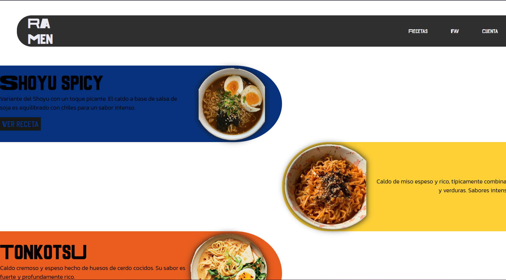
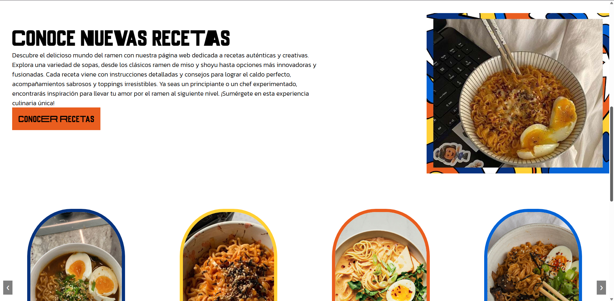

Ramen
Ramen es una página web dedicada a compartir una amplia variedad de recetas, que van desde opciones simples para quienes están comenzando en la cocina, hasta preparaciones más elaboradas pensadas para los más experimentados. Cada receta se presenta con instrucciones paso a paso y videos tutoriales, facilitando el proceso de aprendizaje.
Además, la plataforma permite registrarse para guardar tus recetas favoritas y conectar con otras personas interesadas en la cocina. Este proyecto fue desarrollado como parte de la clase de Diseño Digital III.
Página principal



Ramen - Diseño Digital III